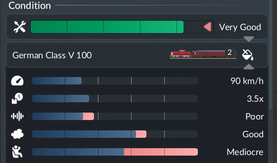
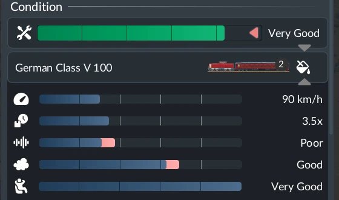

Bug Fix - Comfort Bar
The vehicle window shows false wear on a locomotive-hauled train's Comfort bar, even on a new train. This mod counts only the parts with seats.
Fix Comfort Bar
Setting: Fix Comfort Bar · On by defaultOne train in Very Good condition, a German Class V 100 hauling two coaches. With two coaches the locomotive's zero pulls the comfort down to Mediocre; with one it would be worse.

- 1The train is in Very Good condition.
- 2Yet its Comfort bar shows a long red part, as if worn out.
- 3Rated Mediocre.

- 1Noise and pollution keep their small red parts: that is real wear.
- 2Comfort: full, no red part, rated Very Good.
Why
Open a passenger train's window and expand its vehicle info under Condition: the Comfort bar of a locomotive-hauled train shows a large red part and a poor rating, even when the train is brand new or in Very Good condition. Red on these bars is meant to show what a vehicle has lost to wear.
The window takes the train's comfort as that of its least comfortable coach, but works out the comfort after wear as an average over every part of the train, the locomotive included, which has no seats and so counts as zero. A locomotive with one coach shows half the coach's comfort, often "Very Poor".
What it does
The mod works out the comfort after wear the same way as the comfort itself: from the least comfortable part that has seats, after its own wear. A train in good condition shows its full comfort with no red part; red appears only for comfort really lost to wear or to a comfort modifier.
Good to know
- Only the display changes: how comfortable passengers find the train is worked out by the game itself and stays as it is.
- Speed, noise, pollution and every other figure stay as the game shows them.
- It saves nothing with your game, so it can be removed at any time.
Settings
Choosing a save's mods: the gear next to Bug Fix - Comfort Bar → Settings. Each save keeps its own choice. Off turns a feature off completely.
| Setting | Default | What it does |
|---|---|---|
| Fix Comfort Bar | On | The vehicle window's Comfort bar no longer counts locomotives and other parts without seats as zero comfort. |
| Logging | Off | Writes the mod's messages to the game log (stdout.txt), for bug reports. |
More
Compatibility
Works with any map and any other mod. Seen on game build 40444, where the game bug is still there.